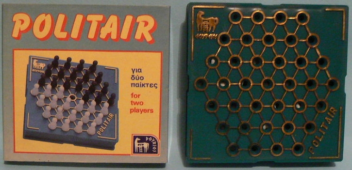

POLITAIR
Copyright (c) 1985 Dourios Publisher
This game is played on the following board.
- TURN - On each turn, each player must move a friendly stone
- Stones can jump over an adjacent enemy stone (not capturing it) landing on the immediate next cell that must be empty
- Stones can also jump over an adjacent friendly stone (capturing it)
- Jumps can be multiple.
- GOAL - When no more jumps are possible, wins the player with less stones.
I assume that captures must be mandatory, given the goal. I would also suggest to implement a mandatory maximum capture rule, for more tactical depth (despite this might be hard to evaluate with complex positions).
This is an obscure Greek game, which the only online reference I found is at BGG's game description.

In June 2026, Kostas Athens kindly sent me the original rules:
How to set up the pawns: At the beginning, each player places their pawns on their half of the board, which has 37 holes (positions).
Thus, after the players have placed their pawns, in the center of the middle line, there is an empty hole; to its left are three pawns of one color and to its right are three pawns of the other color. The objective of the game is for each player to try to be left with as few of their own pawns as possible at the end of the game to be the winner.
How to play: Each player plays once, unless they are unable to continue, in which case they lose their turn and the opponent continues. A coin toss determines who goes first. To be able to play, players must be able to jump over a pawn immediately adjacent to them, whether it is their own or an opponent's, into an empty hole, in any direction and along the paths indicated by the embossed gold lines. Consecutive jumps are also allowed. When players jump over pawns, they remove only their own pawns from the game; this is the goal. They jump over opponent's pawns for strategic reasons.
Comments: Although this game is played by two players, most of the time one feels that they are alone with the pawns and not with an opponent, and for this reason, it requires special attention. If you wish to complete your collection, ask for the special base to place these games in a spot in your house (bookcase, sideboard, etc.)